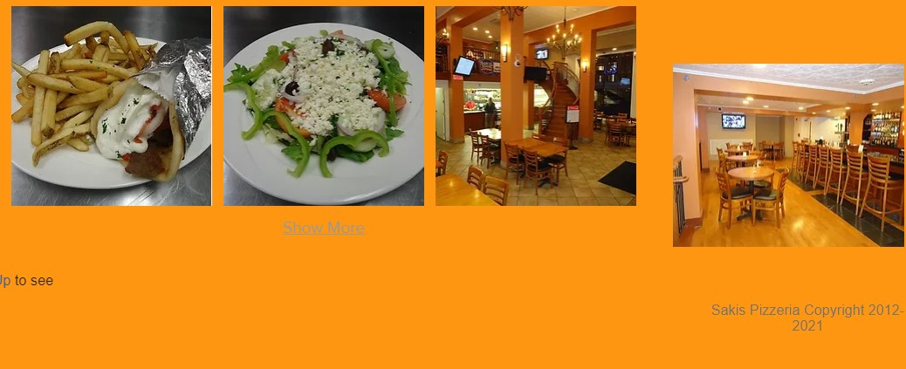
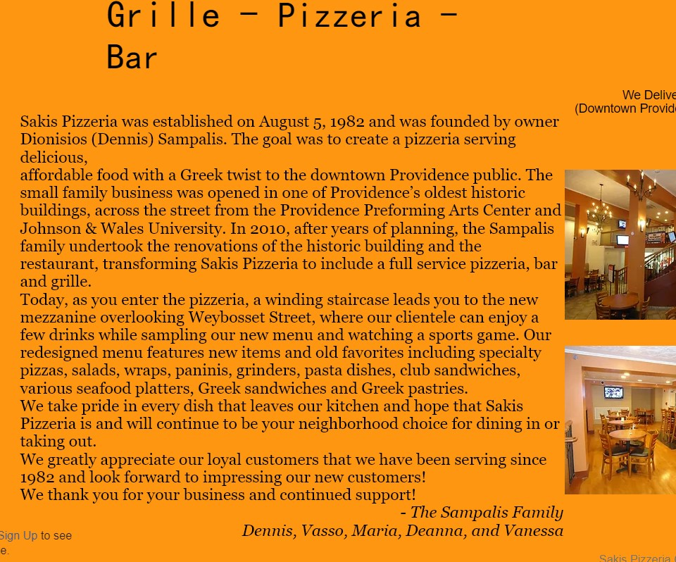
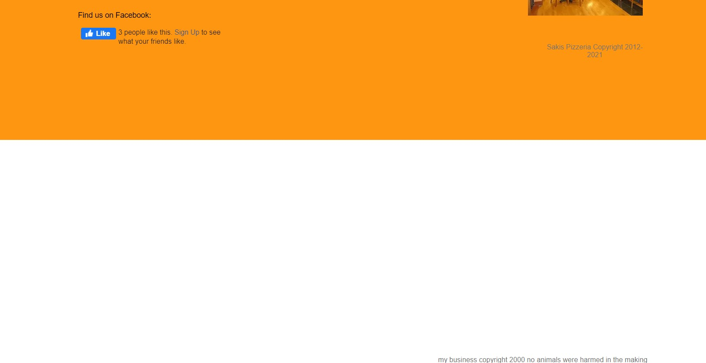
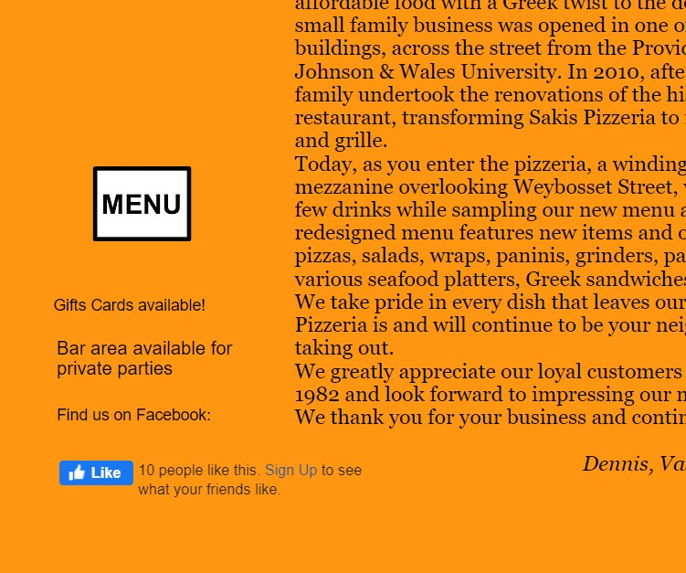
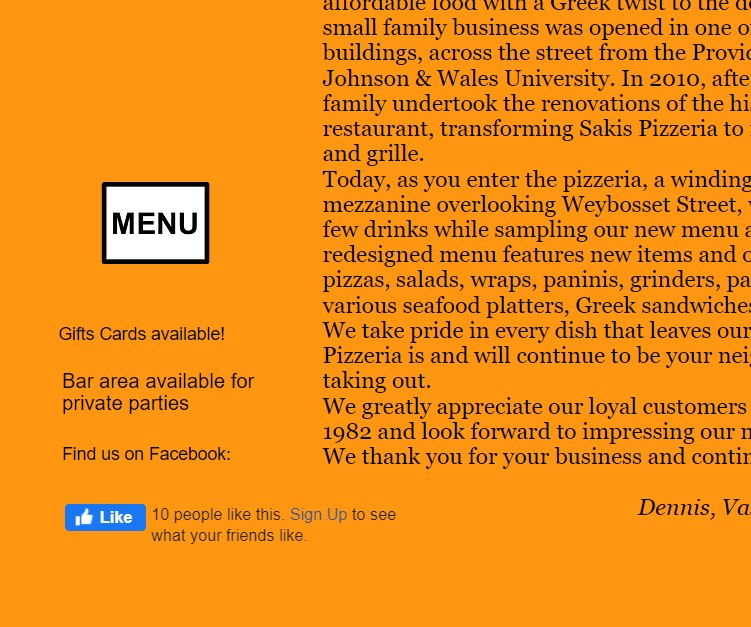

Finding Problems
Mental vs Conceptual model
Mental model:
When entering the website of a pizzeria, people would mostly think of :
- See the menu
- How to order (phone or online?)
- Check the pizzeria's info (location, phone, hours)
Conceptual model:
This website provides the conceptual model in these parts:
- Showing the menu
- Providing the pizzeria's info (location, phone, hours)
- Showing the pictures
- Introducing the history(about us)
Usability
- Menu- hard to spot on large devices.
- Hard to spot important information
- Low font color contrast
- Misaligned paragraph
- Gallery pictures do not have proper labels
- Empty white region
- Misplaced facebook link
One of the most important contents of the website is the menu. On the mobile side, the menu is standing out at the center, with the high-contrast comparison for the background and the black border.
However, the menu button is not very visible on larger devices, for example, it is in the middle of the left column, where the eye-catching middle is a large picture of the interior.
Similiarly, when the user visits the website, another important thing is the contact information for the pizzeria. In this case, it would be the location, phone number, hours, and delivery availability. As discussed above, the website's large device display did not provide a proper text hierarchy for the information. They are located in the top right corner, with a relatively small font. Such an arrangement will make it difficult for the users to find the information effectively.
Some of the texts are in low contrast with the background, which makes them hard to read. For example, the navigation “Home, Gallery, About Us” bar, when selected, turns to a grey color, which is really hard to read on the orange background. The same with the “show more” at the bottom of the gallery.
The whole paragraph in the “About Us” section is awkwardly arranged. The paragraph is too compact, and there are unnecessary line breaks, which makes the reading experience a bit difficult.
The pictures in the “Gallery” are named with numbers and do not have any comments on them, and the customers will have no idea what the dish is called.

The website is scrollable, on both mobile and desktop devices. However, on the desktop device with a larger display, there is a blank space with the copyright information, which is not part of the footer. There might be something wrong with the structure of the code, and I will try to figure it out in a later part.
The website provides the function of facebook likes. Its placement looks fine on the larger device display, but the button is misplaced in the mobile version, which is misaligned with the “find us on facebook”.
 

Learnability
As mentioned in the previous evaluation of usability, the first-time visitor who wants to see the information and the menu would have to browse between the left and right of the website. Since this website does not provide online order service, its function is fairly simple and straightforward. The users would not spend too much time on getting their target, but it still would take more time than expected.
Memorability
Similarly, since the website's function is fairly simple, the user would not have too much trouble getting their target when revisiting the website after a while.